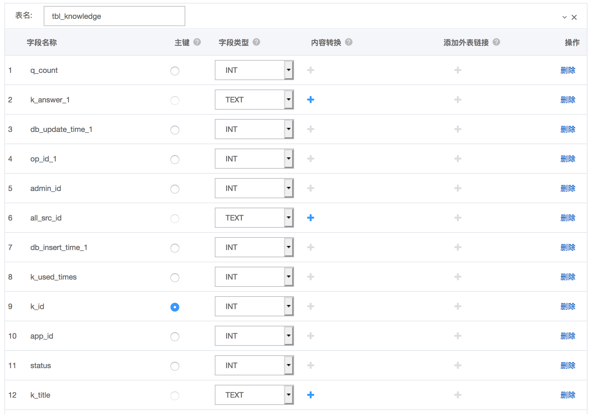
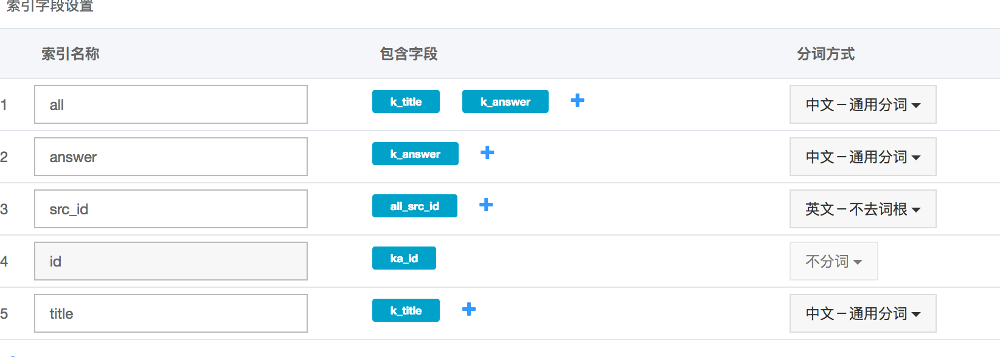
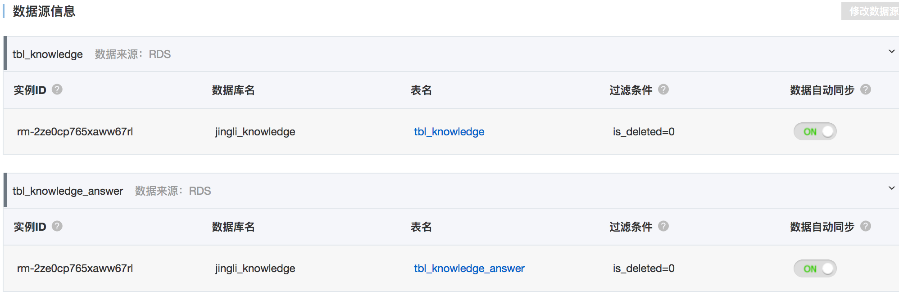
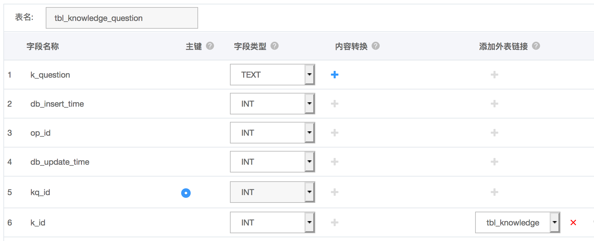
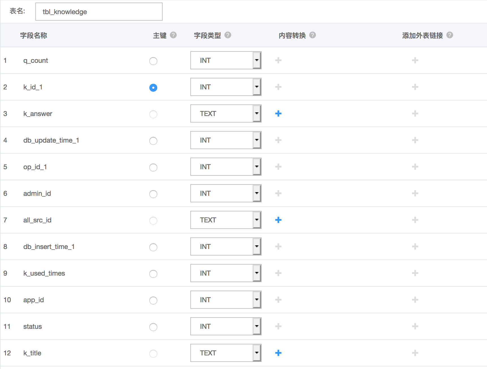
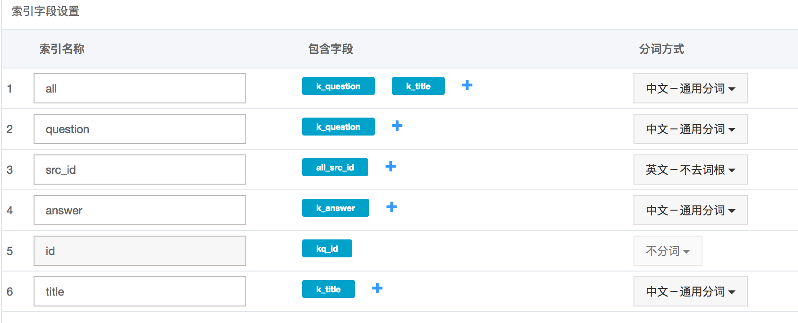
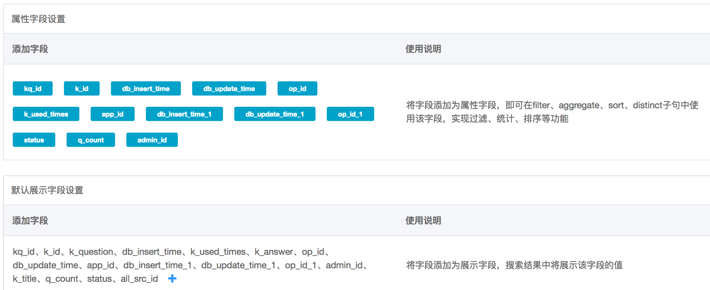
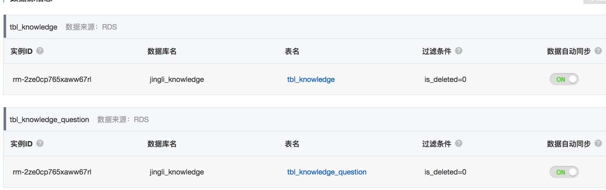
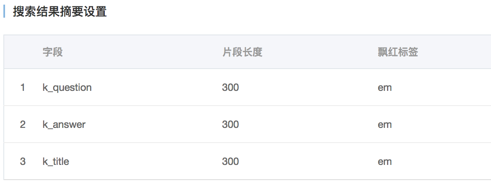

opensearch上的应用给CRM后台 的查询功能提供接口
配置RDS访问白名单
lan:
192.168.0.0/24
gemii:
116.236.177.182
opensearch:
100.104.248.0/24 11.127.123.0/24 11.193.153.11 11.195.170.19
11.196.18.13 11.196.19.20
11.217.213.0/24 11.217.217.0/24 11.217.219.0/24
aws:
52.80.194.120
创建opensearch应用
参考:
https://help.aliyun.com/document_detail/29119.html?spm=5176.7946605.1326713.4.70628b6cydTDZx
注意: 区域要和RDS相同 选择高级版 入门型每个区域只能申请两个
添加RDS数据源配置
jingli_knowledge_answer
提供答案和标题的匹配搜索api
主表

辅表

搜索字段映射

属性字段设置和默认展示字段

数据源信息

jingli_question
提供全部匹配搜索api和问题的匹配搜索api
主表

辅表

搜索字段映射

属性字段设置和默认展示字段

数据源信息

搜索结果飘红展示

注意: 配置时字段名必须和示例完全一致
申请access key配置到服务中
- opensearch-shanghai (gemii账号)
> host:
> opensearch-cn-shanghai.aliyuncs.com
> AccessKeyID：
> LTAIZ0kZiSmtZRA3
> AccessKeySecret：
> x1VjJtlEJRNTkz1QbA7Z8ieDWJkUOX
- opensearch-beijing (laiye账号)
> host:
> opensearch-cn-beijing.aliyuncs.com
> AccessKeyID：
> LTAI9vymbGg5dWSw
> AccessKeySecret:
> JN5IDWdAdCFCHfQSpkZJNQ0bK2DSzA